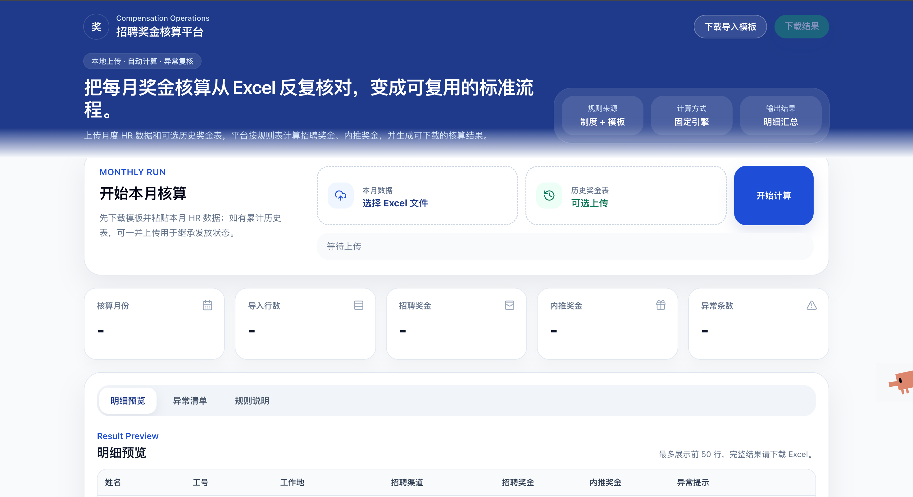
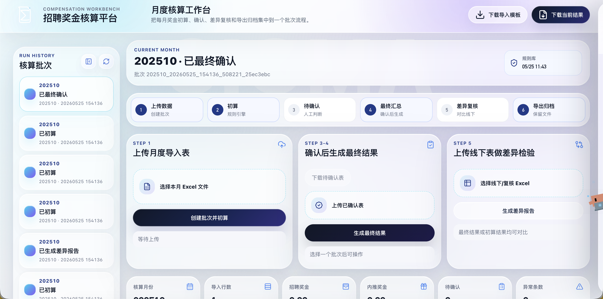

先有表
最开始的核心资产不是代码，而是一个能算出结果的 Excel 模板。
这个页面不是技术文档，而是一个从 0 到 1 的过程演示。它把最开始的 Excel 模板、我给 AI 的 prompt、我用到的 skills、平台早期示意图，以及现在的平台工作台都放在一页里，方便别人理解什么叫做“人负责业务判断，AI 负责把想法快速变成产品”。
起点
Excel 模板 先把招聘奖金和内推奖金的表格逻辑摸清，再交给代码稳定复现。中间过程
Prompt + Skills 我不断告诉 AI 业务范围、流程边界和页面形态，AI 负责落地。现在
月度核算工作台 支持批次、待确认、最终结果、差异报告和归档。核心认知
不是魔法 不是 AI 自动长出系统，而是人和 AI 持续协作、逐步收敛。01 · 从 0 到 1 的推进路径
我先用 Excel 验证业务规则，再用 prompt 把需求讲给 AI，之后让 AI 帮我搭出平台雏形、收敛流程、补测试、改前端，最后才得到现在这个更像产品的版本。
最开始的核心资产不是代码，而是一个能算出结果的 Excel 模板。
通过 prompt 把“要解决什么问题、要保留哪些流程”说清楚。
先做能跑的版本，不追求一步到位，先把上传、计算、导出打通。
逐步加入批次留痕、待确认、最终汇总、线下差异复核等真实工作流。
让它不只是脚本，而是给业务同事也能用的月度核算工作台。
02 · 参考素材
下面这些就是最能代表这个项目“从手工逻辑到平台逻辑”的素材。我没有把它做成纯截图堆砌，而是做成了适合演示的可视化参考图。
演示图 1
还在表格阶段时，核心是把月度数据字段和规则表维护清楚，先能把业务逻辑跑起来。
演示图 2
早期 MVP 已经从纯表格走到网页形态，重点是把上传、初算、待确认和差异检验这些主路径先打通。

演示图 3
当前版本在视觉和结构上都更完整，已经更接近一个可协作的月度核算工作台。

参考图 A
项目起点是一个月度导入模板。它已经说明了真实业务流程：粘贴 HR 数据、上传到平台、下载初算结果、有待确认时再回传确认表。
| 单元格 | 内容 |
|---|---|
| A1 | 招聘奖金核算月度导入模板 |
| A2 / B2 | 使用流程 / 1. 在“导入_月度数据”粘贴本月 HR 数据。 |
| B3 | 2. 保存后上传到招聘奖金核算平台。 |
| B4 | 3. 在平台下载初算结果；如有待确认节点，再按平台流程回传确认表。 |
这一步很关键：AI 不是凭空创造业务逻辑，而是读取并重构你已经验证过的业务表格。
参考图 B
这个平台后来之所以能稳定计算，是因为规则被拆成了结构化的 sheet，而不是只停留在口头解释。
| Sheet | 关键字段 |
|---|---|
| 规则_招聘周期 | 标签分类、ABC 类别、职级、标准招聘周期天数、匹配键 |
| 规则_招聘奖金 | 标签分类、ABC 类别、职级、招聘奖金标准、币种、匹配键 |
| 规则_渠道系数 | 招聘渠道、奖金系数、规则来源 |
| 规则_内推奖金 | 制度范围、地区类型、ABC 类别、职级、分期比例、匹配键 |
当规则被拆清楚后，AI 才更容易把它们搬进后端规则引擎，而不是继续堆 Excel 公式。
03 · 代表性 Prompt
下面这些不是逐字聊天记录，而是根据项目现状还原出来的“代表性 prompt”。它们体现了 vibecoding 的本质：业务方负责表达意图，AI 负责把意图翻译成代码和界面。
Prompt 1 · 定边界
这类 prompt 的作用是让 AI 明白：先做“可控、可验证”的产品，而不是追求玄学自动化。
Prompt 2 · 收敛流程
这一步是从“脚本”走向“平台”的分水岭，因为它开始贴近真实业务动作。
Prompt 3 · 做成别人能看懂的页面
这类 prompt 解决的是“表达层”的问题，也就是把功能变成更容易传播和演示的形态。
04 · 我运用的 Skills
对非技术同学来说，可以把 skill 理解成“给 AI 的工作 SOP”。不同 skill 负责不同阶段：先想清楚，再规划，再做页面，再验证结果。
让 AI 先检查当前任务应该走什么方法，而不是一上来就乱写代码。
先把要做的页面结构、内容边界、表达方式说清楚，再开始落地。
把想法拆成可执行步骤，例如先锁边界、再改前端、再收 API、最后验证。
把“能用的页面”做成“有表达力的页面”，适合对外演示和给小白讲清楚。
不是写完就算完，而是要求 AI 用测试和页面检查证明它真的可用。
05 · 平台图示前后变化
下面左边是根据项目早期形态还原的起步版示意图，右边是按当前代码结构整理出的工作台示意图。核心变化不是“好不好看”，而是产品是否开始承载真实流程。
起步版示意图
这个阶段最重要的是验证“Excel 能不能被平台读进去，规则能不能被稳定计算出来”。页面通常很轻，重点是打通输入和输出。
这是很多 vibecoding 项目的正确起点：先做出“最短可验证闭环”。
当前版示意图
当前版本已经不只是一个“上传后下载结果”的页面，而是把月度批次、待确认、最终汇总、差异复核和明细筛选组织成一个完整工作台。
Compensation Workbench
招聘奖金核算平台 月度核算工作台，集中处理上传、初算、确认、差异复核和导出归档。Current Month
当前批次 + 规则库版本 上传导入表后生成一个可追溯核算批次。产品的成熟，不是代码行数增加，而是页面开始承载真实的业务节奏和角色协作。
06 · 做到现在意味着什么
真正能给别人启发的，不是“AI 一下子做出了平台”，而是你怎么把复杂业务拆开、讲清、验证、再持续交给 AI 迭代。
业务层
产品层
学习层
07 · 怎么推广给其他伙伴用
这个平台如果要给更多伙伴用，不一定一上来就做成大而全系统。更实际的路线是先让本地可运行，再做局域网或服务器网页，最后再根据使用人数决定要不要封装成桌面软件。
阶段 1
适合你自己先用，或者一两个熟悉流程的伙伴试跑。重点不是“部署”，而是让流程稳定，确保 Excel 上传、初算、待确认、最终结果都走得通。
阶段 2
当流程基本稳定后，更推荐放到一台内部服务器上，让大家通过浏览器访问。这样你不用每个人都教一遍环境安装，也方便统一更新规则库和代码版本。
阶段 3
如果未来希望 HR 或薪酬同事双击就能打开，不关心命令行，也可以把这个网页平台再包成桌面应用。底层还是同一套逻辑，只是外面套一层更友好的壳。
实际推广时，最稳妥的顺序通常是：先自己本地跑顺，再给少数伙伴试用，再做内部网页版本，最后再决定是否需要封装成软件或接入更正式的企业系统。